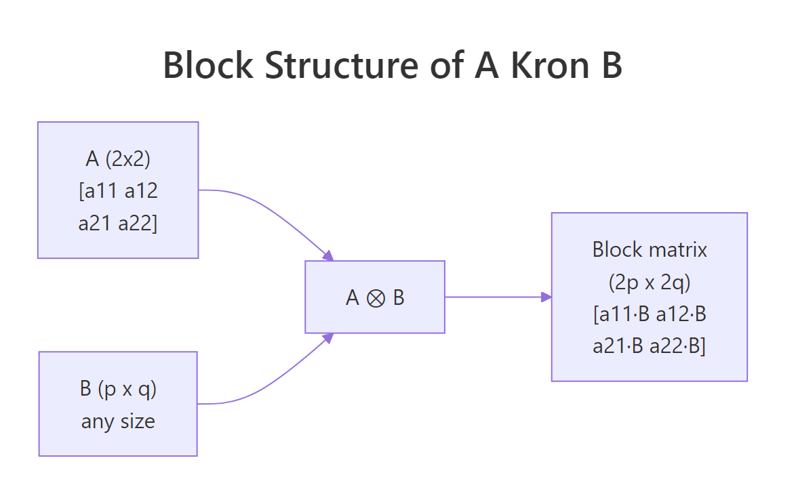
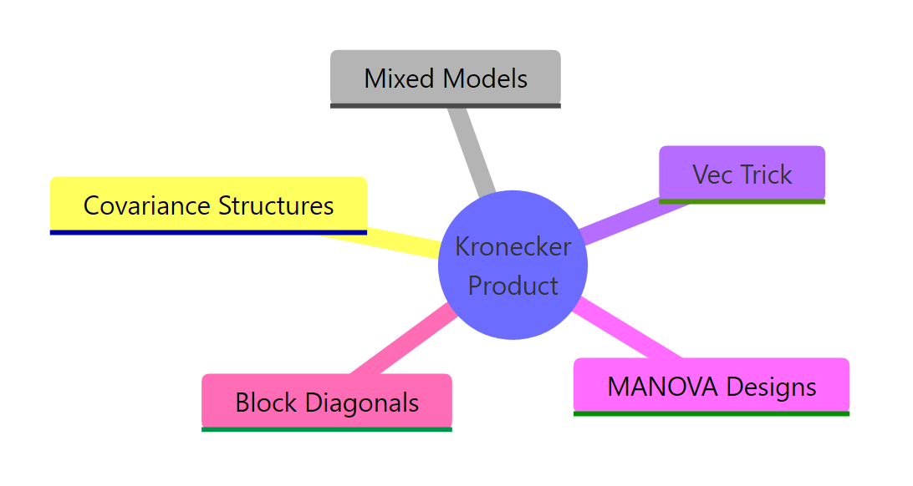

Kronecker Products in R: Mixed Models & Structural Equation Matrices
The Kronecker product, written $A \otimes B$ and computed in R with kronecker() or the %x% operator, multiplies every element of $A$ by the entire matrix $B$ to produce a block matrix. That single operation underpins repeated-measures covariance, multivariate mixed models, and the vec trick for solving matrix equations.
How do you compute a Kronecker product in R?
If you have a matrix $A$ that is $m \times n$ and a matrix $B$ that is $p \times q$, the Kronecker product $A \otimes B$ is an $mp \times nq$ block matrix where the block at position $(i, j)$ is the scalar $a_{ij}$ multiplied by the entire $B$. R gives you two interchangeable ways to compute it: the function kronecker(A, B) and the infix operator A %x% B. Both produce the same result, and both work for matrices, vectors, and higher-dimensional arrays.
Read the output as a $2 \times 2$ grid of $2 \times 3$ blocks. The top-left block is $1 \cdot B$, the top-right is $2 \cdot B$, the bottom-left is $3 \cdot B$, and the bottom-right is $4 \cdot B$. The result is $4 \times 6$ because $2 \cdot 2 = 4$ rows and $2 \cdot 3 = 6$ columns. Notice how the structure of $A$ is fully preserved on the outside while $B$ tiles the inside.

Figure 1: Block layout of $A \otimes B$. Each scalar in $A$ is replaced by that scalar times the entire matrix $B$.
Try it: Build $A = \begin{pmatrix} 1 & 0 \\ 0 & 2 \end{pmatrix}$ and $B = \begin{pmatrix} 1 & 1 \\ 1 & 1 \end{pmatrix}$, then compute A %x% B. Predict the result before you run it.
Click to reveal solution
Explanation: Because $A$ is diagonal, the Kronecker product is block-diagonal. Each diagonal entry of $A$ scales a copy of $B$ on the diagonal of the result. Off-diagonal blocks vanish.
What algebraic properties does the Kronecker product satisfy?
Three identities turn the Kronecker product from a matrix-tiling trick into a calculation tool. The first is the mixed product property, which connects ordinary multiplication to the Kronecker product:
$$(A \otimes B)(C \otimes D) = (AC) \otimes (BD)$$
This works whenever $AC$ and $BD$ are conformable. The transpose splits component-wise, $(A \otimes B)^T = A^T \otimes B^T$, and so does the inverse, $(A \otimes B)^{-1} = A^{-1} \otimes B^{-1}$ when both $A$ and $B$ are invertible. The trace satisfies $\operatorname{tr}(A \otimes B) = \operatorname{tr}(A) \cdot \operatorname{tr}(B)$, and the determinant is $\det(A \otimes B) = \det(A)^p \cdot \det(B)^n$ for $A$ of size $n \times n$ and $B$ of size $p \times p$.
Let's verify the mixed product property numerically. We will build four small matrices, compute both sides, and check that they match.
all.equal() returns TRUE, confirming the identity holds to numerical precision. This single property is what lets you simplify expressions like $(I \otimes B)(A \otimes I) = A \otimes B$, a substitution that turns up constantly in mixed-model derivations.
Now check the inverse and transpose identities:
Both checks pass. The practical payoff is huge: instead of inverting a giant $mp \times mp$ matrix, you can invert two smaller matrices and Kronecker the results. For an $A$ of size $50 \times 50$ and $B$ of size $50 \times 50$, that turns one $2500 \times 2500$ inversion into two $50 \times 50$ inversions, a roughly 50x speedup.
Try it: Verify that $\operatorname{tr}(A \otimes B) = \operatorname{tr}(A) \cdot \operatorname{tr}(B)$ for the matrices defined above. Compare the two sides with all.equal().
Click to reveal solution
Explanation: The diagonal of $A \otimes B$ contains $a_{ii} \cdot b_{jj}$ for every pair $(i, j)$. Summing gives $\sum_i a_{ii} \cdot \sum_j b_{jj}$, which is exactly the product of traces.
How does the Kronecker product build repeated-measures covariance?
Repeated-measures designs collect multiple observations per subject, and those observations are correlated. A common modeling assumption is that the full covariance has separable structure: subjects are independent (or share one between-subject pattern), and within each subject, time points share another pattern. Mathematically,
$$\Sigma_{\text{full}} = \Sigma_{\text{subject}} \otimes \Sigma_{\text{time}}$$
This Kronecker form has only as many free parameters as the two factors combined, instead of the full $\binom{np}{2}$ parameters of an unrestricted covariance. Let's build one in R using a compound-symmetry between-subject pattern and an AR(1) within-subject pattern.
The full covariance is $12 \times 12$ (3 subjects times 4 time points), but it has only two free correlation parameters. Within each subject (the diagonal $4 \times 4$ blocks), correlations follow the AR(1) pattern $0.7^{|i-j|}$. Between subjects (the off-diagonal blocks), correlations are scaled by rho_subj = 0.2. Without the Kronecker structure you would have to estimate 66 covariance entries; with it you estimate just two.
nlme::gls() accepts corStruct and weights specifications that are essentially building blocks of a Kronecker covariance. SAS PROC MIXED exposes this directly via the TYPE=UN@AR(1) syntax.Try it: Change rho_time to 0.0 and re-compute Sigma_full. What happens to the within-subject blocks? Why?
Click to reveal solution
Explanation: When rho_time = 0, Sigma_time is the identity. The Kronecker product Sigma_subj %x% I becomes a block-diagonal-like pattern where each within-subject block is I, meaning observations within a subject are uncorrelated. Subjects still share the between-subject pattern.
How does the vec trick simplify matrix equations like AXB = C?
Matrix equations of the form $AXB = C$ look harmless until you try to solve for $X$. The classical fix is the vec trick, which uses the Kronecker product to convert any such equation into an ordinary linear system. Let vec(M) denote the column-stacked version of a matrix $M$. Then
$$\operatorname{vec}(AXB) = (B^T \otimes A) \operatorname{vec}(X)$$
Setting $\operatorname{vec}(C) = (B^T \otimes A) \operatorname{vec}(X)$ gives a standard linear system that you can solve with solve(). The unknowns are the elements of $X$, stacked into a vector.
The recovered X_solved matches X_true to machine precision. The trick converted a $3 \times 2$ matrix equation into a $6 \times 6$ linear system, solved it, then reshaped the result. Generalizations like the Sylvester equation $AX + XB = C$ become $(I \otimes A + B^T \otimes I) \operatorname{vec}(X) = \operatorname{vec}(C)$, which the same approach handles.
lyapunov solvers in specialised packages).Try it: Verify the solution by reconstructing $A X B$ with the recovered X_solved and checking it matches C_eq.
Click to reveal solution
Explanation: The reconstruction returns TRUE because the vec trick is an exact reformulation, not an approximation. Any numerical difference comes only from finite-precision arithmetic during solve().
How do Kronecker products appear in mixed models and SEM?
Two places dominate: multivariate random-effects models and structural equation models with patterned covariance.
In a multivariate random-effects model with $q$ traits and $n$ subjects, the random-effects vector has covariance $G \otimes I_n$, where $G$ is a $q \times q$ trait-covariance matrix and $I_n$ is the identity over subjects. The Kronecker form says "subjects are independent, but the $q$ traits share a covariance pattern." Likewise, the residual covariance for repeated-measures multivariate data is often modeled as $R \otimes I_n$ for trait residuals, or as a full Kronecker $R_{\text{trait}} \otimes R_{\text{time}}$ for trait-by-time repeated measures.
Read the $10 \times 10$ matrix as a $2 \times 2$ grid of $5 \times 5$ blocks. The diagonal blocks are $1.0 \cdot I_5$ and $1.5 \cdot I_5$, the trait variances. The off-diagonal blocks are $0.6 \cdot I_5$, the trait covariance. Subjects are uncorrelated within each trait pair, but the same pair of traits is correlated within every subject.
In structural equation modeling, the implied covariance matrix often factors as Kronecker products when you have nested or replicated structures across groups. Multi-group SEM with equality constraints across groups is one example. Any time the model says "the same pattern repeats over subjects, occasions, or items," there is a Kronecker product hiding in the math.
lme4 cannot fit Kronecker covariance directly. It supports only block-diagonal random-effect structures. For Kronecker structures use glmmTMB (the us(), ar1(), cs() covariance functions can be combined), sommer (designed for genetic models), asreml-R (commercial), or nlme with hand-built corStruct objects.Try it: Extend the example above to $q = 3$ traits with $G$ chosen so trait 3 is uncorrelated with traits 1 and 2 but has variance 0.5. Compute $G \otimes I_5$ and check the dimensions.
Click to reveal solution
Explanation: The trait-3 row of G has zeros against traits 1 and 2, so the corresponding off-diagonal blocks of ex_V are zero. Trait 3 evolves independently of the first two while still sharing subject indices.

Figure 2: Five everyday places Kronecker products appear in applied statistics.
Practice Exercises
Exercise 1: Determinant via the Kronecker identity
Build an AR(1) covariance S1 of size $5 \times 5$ with rho = 0.4, and an exchangeable covariance S2 of size $3 \times 3$ with off-diagonal 0.3 and unit variance. Compute det(S1 %x% S2) directly, then compute it via the identity $\det(A \otimes B) = \det(A)^p \cdot \det(B)^n$ where $A$ is $n \times n$ and $B$ is $p \times p$. Save both values to my_direct and my_identity, and confirm they match with all.equal().
Click to reveal solution
Explanation: The exponents in the identity are determined by the other matrix's size. det(S1) is raised to the power $p = 3$ (size of S2), and det(S2) is raised to the power $n = 5$ (size of S1). Many likelihood evaluations for Kronecker-structured covariance use exactly this identity to avoid forming the full matrix.
Exercise 2: Solve a Sylvester equation with the vec trick
Solve $AX + XB = C$ for $X$, where $A$ is $3 \times 3$, $B$ is $2 \times 2$, and $C$ is $3 \times 2$. Use the identity $\operatorname{vec}(AX + XB) = (I_2 \otimes A + B^T \otimes I_3) \operatorname{vec}(X)$. Store the recovered $X$ as my_X and confirm $A X + X B$ equals $C$ with all.equal().
Click to reveal solution
Explanation: Each Kronecker term encodes one of the matrix products. $I_2 \otimes A$ replicates $A$ along block diagonals (representing $AX$), and $B^T \otimes I_3$ encodes $XB$. Adding them combines both linear actions into a single coefficient matrix.
Exercise 3: Build a repeated-measures design matrix
You have $n = 4$ subjects, each measured on 3 occasions. The within-subject design matrix is W <- cbind(1, c(0, 1, 2)) (intercept and linear time). Build the full design matrix my_Z for the random subject effects using kronecker() of diag(n) and W. The result should be $12 \times 8$.
Click to reveal solution
Explanation: diag(n) %x% W produces a block-diagonal matrix with one copy of W per subject. This is exactly the random-effects design matrix for a multilevel model where every subject has their own intercept and slope. Mixed-model software constructs this matrix internally for every random-slope specification.
Complete Example
Bringing the threads together: simulate 30 subjects with 4 time points and 2 traits, build the Kronecker-structured covariance, and draw multivariate-normal samples from it.
The empirical covariance from 30 simulated subjects is close to the theoretical AR(1) pattern with $\rho = 0.6$ for the first trait. The Cholesky factor L is fast to compute because Sigma is only $8 \times 8$, but for a 50-time-point trial with 5 traits the saving from working in factor form rather than the full $250 \times 250$ matrix would be substantial. This is the workflow inside any solver that exploits Kronecker structure.
Summary
| Task | Operator / function | Property used | Code |
|---|---|---|---|
| Compute $A \otimes B$ | kronecker() or %x% |
Block tiling | A %x% B |
| Invert $A \otimes B$ | solve() on factors |
$(A \otimes B)^{-1} = A^{-1} \otimes B^{-1}$ | solve(A) %x% solve(B) |
| Compute $\det(A \otimes B)$ | det() on factors |
$\det(A)^p \det(B)^n$ | det(A)^p * det(B)^n |
| Solve $AXB = C$ | Vec trick | $\operatorname{vec}(AXB) = (B^T \otimes A) \operatorname{vec}(X)$ | solve(t(B) %x% A, as.vector(C)) |
| Repeated-measures covariance | %x% |
$\Sigma = \Sigma_{\text{subj}} \otimes \Sigma_{\text{time}}$ | S_subj %x% S_time |
| Multivariate random effects | %x% |
$V = G \otimes I_n$ | G %x% diag(n) |
References
- R Core Team. kronecker: Kronecker Products on Arrays. R base documentation. Link
- Schäcke, K. (2013). On the Kronecker Product. University of Waterloo. PDF
- Searle, S. R. (1982). Matrix Algebra Useful for Statistics. Wiley.
- Magnus, J. R., & Neudecker, H. (2019). Matrix Differential Calculus with Applications in Statistics and Econometrics, 3rd ed. Wiley.
- Pinheiro, J. C., & Bates, D. M. (2000). Mixed-Effects Models in S and S-PLUS. Springer. Chapter 5 on covariance structures.
- Brooks, M. E., et al. (2017). glmmTMB Balances Speed and Flexibility Among Packages for Zero-inflated Generalized Linear Mixed Models. The R Journal, 9(2). Link
- Wikipedia. Kronecker product. Link
Continue Learning
- Matrix Operations in R: the parent post covers create, multiply, invert, transpose, the prerequisite vocabulary for everything above.
- Singular Value Decomposition in R: another structured factorisation that pairs naturally with Kronecker products in low-rank covariance models.
- Cholesky Decomposition in R: how the Kronecker covariance gets factored for fast multivariate-normal sampling.